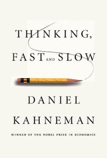
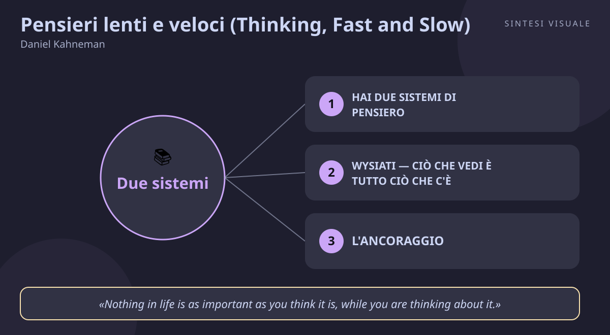

Home / Libri / Pensieri lenti e veloci (Thinking, Fast and Slow)

Pensieri lenti e veloci (Thinking, Fast and Slow)
Daniel Kahneman · Emozioni e decisioni
«Pensieri lenti e veloci (Thinking, Fast and Slow)»
- Sistema 1 e Sistema 2
- WYSIATI
- Ancoraggio
- Avversione alla perdita
🧭Introduzione
Daniel Kahneman (1934–2024) era uno psicologo israelo-americano, professore a Princeton, vincitore del Premio Nobel per l'Economia nel 2002 per gli studi sul giudizio e la decisione in condizioni di incertezza — un Nobel dato a uno psicologo, cosa mai accaduta prima. Per decenni, insieme all'amico e collega Amos Tversky, ha smontato con esperimenti eleganti l'idea che l'essere umano sia un decisore razionale. Questo libro è la summa di quella ricerca: uscito il 25 ottobre 2011 da Farrar, Straus and Giroux, è rimasto per anni nelle classifiche del New York Times, ha vinto il National Academy of Sciences Best Book Award e il Los Angeles Times Book Prize, ed è stato scelto tra i dieci migliori libri del 2011 dal New York Times Book Review.
Perché questo libro conta oggi: ogni giorno prendi centinaia di decisioni — cosa comprare, a chi credere, come investire, chi votare, quando fidarti dell'istinto — convinto di ragionare. Kahneman dimostra che quasi sempre a decidere è un sistema veloce e automatico che non sai nemmeno di usare, e che commette errori sistematici e prevedibili. In un'epoca di notifiche, titoli urlati, offerte "solo per oggi" e algoritmi che sfruttano i tuoi automatismi, conoscere questi meccanismi è una forma di autodifesa.
A chi è utile: a chi vende, compra, investe o negozia; a chi lavora con i numeri o con le persone (manager, medici, insegnanti, genitori); a chiunque voglia capire perché gli altri — e lui stesso — prendono decisioni che poi rimpiangono.
📘Riassunto
La scintilla centrale: perché persone intelligenti prendono sistematicamente decisioni stupide? Perché la mente non è un unico ragionatore logico, ma due sistemi — uno veloce e uno lento — che collaborano e litigano, e il veloce quasi sempre vince.
La struttura logica procede in cinque parti:
- I due sistemi — il Sistema 1 (veloce, automatico, emotivo, instancabile) e il Sistema 2 (lento, faticoso, logico, pigro). Il Sistema 1 genera impressioni e intuizioni in continuazione; il Sistema 2 di solito le approva senza verificarle, perché controllare costa fatica.
- Euristiche e bias — le scorciatoie del Sistema 1: ancoraggio (il primo numero orienta tutto), disponibilità (giudichi probabile ciò che ricordi facilmente), rappresentatività e il principio WYSIATI ("ciò che vedi è tutto ciò che c'è").
- Overconfidence — l'eccesso di fiducia: l'illusione di capire il passato, l'illusione di validità delle intuizioni degli esperti, la fallacia della pianificazione (sottostimiamo costi e tempi, dai traslochi alle riforme).
- Le scelte — la teoria del prospetto (con Tversky, 1979): l'avversione alla perdita, l'effetto dotazione, l'effetto framing. Non valutiamo gli esiti assoluti, ma i guadagni e le perdite rispetto a un punto di riferimento — e le perdite pesano circa il doppio dei guadagni.
- Due sé — il sé che vive l'esperienza e il sé che la ricorda: giudichiamo il passato con la regola picco-fine (contano il momento migliore/peggiore e la fine), perciò scegliamo ricordi belli invece di esperienze belle.
Il punto di svolta: il capitolo sulla pigrizia del Sistema 2. Kahneman mostra che la fatica mentale non è una metafora: quando il Sistema 2 è occupato o stanco, crediamo a tutto, cediamo alle tentazioni, diamo risposte superficiali. La razionalità non è un tratto stabile del carattere: è una risorsa che si esaurisce. Da lì in poi il lettore smette di chiedersi "sono razionale?" e inizia a chiedersi "in che condizioni posso fidarmi di me stesso?".
L'eredità oggi: il libro ha fondato l'economia comportamentale come cultura popolare, ha cambiato marketing, finanza, medicina e politiche pubbliche (il "nudging"), ed è citato come riferimento da Cialdini in poi. Resta il manuale per distinguere quando fidarsi dell'intuito — che negli esperti veri funziona — e quando rallentare apposta.
💡Concetti chiave
- Hai due sistemi di pensiero: il Sistema 1 veloce e automatico decide quasi tutto, il Sistema 2 lento controlla quasi niente.
- WYSIATI — ciò che vedi è tutto ciò che c'è: giudichi solo in base alle informazioni disponibili e ignori quelle mancanti, con eccessiva sicurezza.
- L'ancoraggio: il primo numero che incontri trascina ogni stima successiva, anche quando è palesemente casuale.
- L'avversione alla perdita: perdere 100 euro fa molto più male di quanto vincere 100 euro faccia bene — e questo distorce ogni scelta.
- L'effetto framing: la stessa identica scelta, presentata come guadagno o come perdita, ribalta la tua decisione.
- Il Sistema 2 è pigro: la razionalità costa fatica, quindi la usi il meno possibile — e l'overconfidence riempie il vuoto.
📖1. Hai due sistemi di pensiero
- Definizione il Sistema 1 opera in automatico, senza sforzo né controllo volontario (riconoscere un volto, capire una frase semplice, guidare su strada vuota); il Sistema 2 richiede attenzione e fatica (calcolare 17 × 24, parcheggiare in un buco stretto, confrontare due prodotti). Il Sistema 1 propone in continuazione, il Sistema 2 quasi sempre approva.
- Esempio leggi sul cartellone "guerra e..." e la tua mente completa subito "pace", senza che tu abbia deciso di farlo. Se invece devi calcolare quanto ti costa davvero il mutuo con due tan diversi, senti lo sforzo fisico: muscoli tesi, attenzione stretta. Quella differenza è letteralmente la differenza tra i due sistemi.
- Come applicarlo prima delle decisioni importanti (acquisti, assunzioni, investimenti), imponiti una pausa di Sistema 2 — scrivi su carta le alternative e i numeri, fai i conti davvero, dormici sopra. Per le decisioni piccole e ripetute, invece, allena il Sistema 1 con l'esperienza vera e il feedback rapido.
- Errore comune credere che "istinto" significhi sempre "sbagliato" o sempre "geniale". L'intuito degli esperti veri (il maestro di scacchi, il pompiere esperto) è affidabile perché allenato per anni con feedback; l'intuito su mercati, previsioni e persone sconosciute è quasi sempre un'illusione.
- Collegamento Stanovich e West, che coniarono i termini Sistema 1 e Sistema 2; Gerd Gigerenzer e il dibattito su quando le euristiche funzionano; Cialdini, che mostra come i persuasori sfruttino proprio gli automatismi del Sistema 1.
📖2. WYSIATI — ciò che vedi è tutto ciò che c'è
- Definizione What You See Is All There Is: la mente costruisce la storia più coerente possibile con le poche informazioni che ha, e poi ci crede con sicurezza sproporzionata, senza chiedersi cosa manca. Giudichiamo in base a ciò che sappiamo e ignoriamo con disinvoltura ciò che non sappiamo.
- Esempio leggi due recensioni negative su un ristorante e decidi che è pessimo, senza chiederti quante recensioni positive ha, chi le ha scritte, o se i due recensori sono concorrenti. Oppure in riunione senti il primo resoconto di un collega e ti schieri, prima ancora di ascoltare l'altra campana.
- Come applicarlo davanti a un giudizio rapido, chiediti ad alta voce: "cosa non sto vedendo? Quale informazione, se la sapessi, mi farebbe cambiare idea?". Nelle decisioni di gruppo, nomina qualcuno "avvocato del diavolo" con il compito esplicito di cercare le prove mancanti.
- Errore comune confondere la coerenza della storia con la sua verità. Una spiegazione fluida e semplice ("è ovvio che ha fallito perché era arrogante") sembra vera proprio perché è semplice — ma la semplicità è un prodotto del Sistema 1, non una prova.
- Collegamento Nassim Taleb e il "tacchino induttivista" (il tacchino che ogni giorno conferma che il contadino lo ama... fino al Ringraziamento); la pratica della premortem (immaginare che il progetto sia già fallito) per forzare la mente a cercare ciò che manca.
📖3. L'ancoraggio
- Definizione quando devi stimare un numero ignoto, parti da un numero iniziale — l'ancora — e aggiusti troppo poco. L'ancora funziona anche se è palesemente arbitraria (un numero di telefono, un lancio di dadi, un prezzo di listino gonfiato): il Sistema 1 la prende sul serio comunque.
- Esempio un giubbotto "da 300 euro, oggi a 120" ti sembra un affare anche se non vale più di 100: il 300 ha ancorato il tuo giudizio. In trattativa, chi spara per primo il prezzo sposta tutto l'intervallo della discussione verso di sé — ed è per questo che i venditori esperti non vogliono mai fare la prima offerta bassa.
- Come applicarlo quando negozi o stimi (un preventivo, uno stipendio, una scadenza), prepara TU la tua stima indipendente prima di sentire qualsiasi numero altrui; se l'ancora è già stata lanciata, dilla a te stesso esplicitamente ("quella cifra è un'ancora, ignorala") e riparti dai tuoi dati. Nei negozi, chiediti sempre: "lo comprerei a questo prezzo se non conoscessi lo sconto?".
- Errore comune credere di essere immuni ("io non mi faccio fregare dai prezzi civetta"). Gli esperimenti mostrano che l'ancoraggio colpisce anche giudici, medici ed esperti — sapere che esiste riduce l'effetto ma non lo elimina.
- Collegamento Cialdini e il principio del contrasto (il secondo prezzo sembra piccolo dopo il primo grande); Voss in Never Split the Difference sulle ancore estreme in negoziazione.
📖4. L'avversione alla perdita
- Definizione il cuore della teoria del prospetto (Kahneman e Tversky, 1979, il lavoro del Nobel): le perdite pesano psicologicamente circa il doppio dei guadagni equivalenti. Per questo rifiutiamo scommesse eque (50% vinci 200, 50% perdi 100), teniamo troppo a lungo i titoli in perdita e vendiamo troppo presto quelli in guadagno.
- Esempio hai comprato un'azione a 50 euro, ora vale 30. Razionalmente dovresti chiederti "la ricomprerei oggi a 30?"; invece pensi "aspetto che torni a 50 per non perdere". Così resti incastrato per anni in scelte morte, mentre i guadagni li incassi subito per la paura di perderli — il classico comportamento che rovina i piccoli investitori.
- Come applicarlo riformula ogni decisione in termini di costo opportunità totale ("se non avessi già questo titolo / questo abbonamento / questo progetto, lo sceglierei oggi da zero?"). Nelle vendite e nella persuasione onesta, presenta la tua proposta come qualcosa che evita una perdita, non solo come un guadagno: il Sistema 1 pesa di più la prima versione.
- Errore comune confondere l'avversione alla perdita con la prudenza. Tenere tutto fermo "per non rischiare" è spesso la scelta più rischiosa: è l'effetto dotazione (sopravvaluti ciò che hai già solo perché è tuo) mascherato da saggezza.
- Collegamento Richard Thaler e la finanza comportamentale (l'"effetto dotazione", il "mental accounting"); Goleman e l'intelligenza emotiva — riconoscere l'emozione della perdita prima che decida lei.
📖5. L'effetto framing
- Definizione a parità di fatti, le parole cambiano la scelta. Se un intervento ha "90% di sopravvivenza" lo accetti; se ha "10% di mortalità" lo rifiuti — ed è la stessa identica statistica. Il Sistema 1 reagisce alla formulazione emotiva, non ai numeri reali.
- Esempio "questo yogurt ha il 20% di grassi" suona peggio di "questo yogurt è magro all'80%", eppure dicono la stessa cosa — ed è per questo che sulle etichette trovi sempre la seconda versione. In azienda, "risparmi 200 euro se firmi oggi" converte molto più di "guadagni 200 euro di bonus": la prima attiva l'avversione alla perdita.
- Come applicarlo prima di decidere, riformula tu stesso il problema in entrambe le versioni (guadagno E perdita, sopravvivenza E mortalità) e guarda se la tua preferenza cambia: se cambia, stavi decidendo sulle parole, non sui fatti. Quando comunichi (preventivi, proposte, feedback), scegli il framing con onestà: presenta entrambi i lati e lascia decidere sui numeri veri.
- Errore comune usare il framing per manipolare ("solo 3 pezzi rimasti!" quando il magazzino è pieno) convinti che tanto "è solo marketing". Funziona nel breve, ma quando il cliente se ne accorge la fiducia crolla — e la fiducia è l'unico moltiplicatore di lungo periodo.
- Collegamento Cialdini (Le armi della persuasione, Pre-Suasion): il contesto prepara la decisione; Tversky e Kahneman e il famoso "problema della malattia asiatica" (1981), l'esperimento che dimostrò il framing.
📖6. Il Sistema 2 è pigro (e l'overconfidence riempie il vuoto)
- Definizione il pensiero lento è faticoso — consuma attenzione, zuccheri, volontà — così la mente lo accende il meno possibile. Il risultato è la legge del minimo sforzo: accettiamo risposte facili al posto di quelle giuste e poi siamo sicurissimi di aver ragione. Da qui l'eccesso di fiducia, l'illusione di capire il passato ("lo sapevo!") e la fallacia della pianificazione (tutto costa il doppio e dura il doppio).
- Esempio stimi che ristrutturare il bagno costerà 5.000 euro in un mese. Alla fine sono 9.000 in due mesi — e la cosa si ripete ogni volta, per ogni progetto, in ogni azienda. Non sei sfortunato: sei vittima della pianificazione ottimistica, che immagina lo scenario migliore e ignora gli imprevisti che la statistica rende certi.
- Come applicarlo usa la reference class: invece di immaginare IL tuo progetto ("andrà tutto bene"), chiediti quanto sono costati e durati progetti SIMILI in passato, e prendi quella come base. Poi fai la premortem di Gary Klein: "è passato un anno e il progetto è fallito miseramente: perché?" — e pianifica contro quelle cause.
- Errore comune dopo aver capito i bias, sentirsi guariti ("ora che li conosco non li faccio più"). Kahneman stesso diceva di non essere migliorato affatto come decisore intuitivo: la conoscenza serve a progettare procedure e controlli, non a diventare infallibili a mente.
- Collegamento Goggins e Duckworth (Grit) sulla fatica deliberata; Newport (Deep Work) sul proteggere le ore di Sistema 2; McGonigal (Il lato positivo dello stress) sul mindset verso la fatica mentale.
💬Citazioni da ricordare
"Nothing in life is as important as you think it is, while you are thinking about it."
Perché conta: è l'illusione della focalizzazione in una frase — quando pensi a una cosa (soldi, matrimonio, trasloco), sovrastimi quanto conterà per la tua felicità. Da rileggere prima di ogni scelta "che cambierà tutto".
"A reliable way to make people believe in falsehoods is frequent repetition, because familiarity is not easily distinguished from truth."
Perché conta: spiega bufale, pubblicità martellanti e slogan politici — il Sistema 1 scambia la familiarità per verità. Se senti una cosa ovunque, non è più vera: è solo più ripetuta.
"What you see is all there is."
Perché conta: è il nome del bias più importante del libro (WYSIATI). Ogni volta che sei sicurissimo con poche informazioni, questa frase dovrebbe suonarti in testa come un allarme.
🌍Esempi di oggi
- Il prezzo "barrato" al supermercato. Cartellino "da 8,99 a 4,99": l'8,99 è un'ancora, e il tuo Sistema 1 sente l'affare prima ancora di chiedersi quanto vale davvero quel prodotto o se ti serve. La domanda di Sistema 2 — "lo comprerei a 4,99 senza lo sconto?" — spegne l'incantesimo.
- Litigio in famiglia sul "l'hai fatto apposta". Lui arriva tardi e lei conclude subito: "non ti importa di me". È WYSIATI puro — una storia coerente costruita su un solo fatto, ignorando traffico, riunione infinita, telefono scarico. Chiedere "cosa non sto vedendo?" prima di accusare cambia l'esito della serata.
- Il collega che non vende le azioni in perdita. Tiene un titolo crollato "finché non risale" e intanto perde occasioni migliori: avversione alla perdita più effetto dotazione. La domanda giusta non è "quanto ho perso finora?" ma "con questi soldi, oggi, cosa comprerei?".
🛠️Azioni pratiche
- Fai una premortem su una decisione vera. Prendi un progetto o acquisto che stai valutando, immagina che tra un anno sia stato un disastro e scrivi 5 cause concrete. Poi correggi il piano contro quelle cause prima di partire.
- Neutralizza un'ancora. La prossima volta che vedi uno sconto o senti un prezzo, copri mentalmente il prezzo originale e giudica solo il prezzo finale: vale quella cifra, punto? Fallo almeno 3 volte questa settimana.
- Riformula una scelta nei due framing. Prendi una decisione che rimandi (cambiare fornitore, iscriverti in palestra, chiedere un aumento) e scrivila in versione "cosa guadagno" e in versione "cosa perdo se non lo faccio". Decidi solo dopo aver letto entrambe.
💎Da portare a casa
Non sei un pensatore razionale che ogni tanto sbaglia: sei un pensatore veloce che ogni tanto rallenta — e la saggezza sta nel sapere quando è il momento di rallentare apposta.
💬Approfondimento in chat
Rispondi con il numero di un concetto (1–6) per espanderlo con altri esperimenti ed esempi, oppure chiedimi di collegarlo a un tema — vendite, negoziazione, public speaking, stress, emozioni, carriera — e te lo mostro in azione.
🖼️In un colpo d’occhio

Tocca l’immagine per ingrandirla.